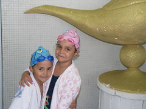

Cia. Ex-sedentário
vamo, vamo, vamo…
Semana passada foi difícil com apenas 2 treinos um na quarta feira de 9km e outro de 30km no sábado, treino ao qual fiquei destruído, a intenção era fazer uns 40km ou mais, mas foi o que deu, não estou chateado foi uma semana de provas da faculdade e o nível de stress estava bem alto, agora os treinos começar a diminuir até o dia da maratona, hoje eu corri 6km em subidas e escadas, esses treinos vão dar um auxilio para Extrema, sábado o longão será de 20 a 25km.
Abraços galera e bons treinos.
 Olívia, Henrique, Dante e Maurício participaram da corrida infantil da Corpore, foi a primeira corrida de cada um. Clique na foto e veja todas as fotos que eu tirei. A Olívia e o Maurício (meus filhos), não se cabiam de tanta alegria (2 medalhas no mesmo dia). E querem mais… Tenho vídeos também que irei postar em breve.
Olívia, Henrique, Dante e Maurício participaram da corrida infantil da Corpore, foi a primeira corrida de cada um. Clique na foto e veja todas as fotos que eu tirei. A Olívia e o Maurício (meus filhos), não se cabiam de tanta alegria (2 medalhas no mesmo dia). E querem mais… Tenho vídeos também que irei postar em breve.
Sabado passado a Olívia e o Maurício (meus filhos) participaram de um duathlon (coitados).
Mas foi obra do destino ter duas competições no mesmo dia.
Era 11 horas quando eles ajudaram a turminha em uma maratona de revezamento aquático. Clique na foto para ver todas as fotos.
Assim, sem treino, mas muita, muita correria e pouquíssimas horas de sono.
Assim foi a minha semana, sem corrida e sem ver direito sequer a família. O problema maior que é que se fico mais de dois dias sem correr me torno “boca nervosa” (como diz o Fábio Namiuti). Se passar de três dias, então, torno-me boca histérica.
Minha última corrida foi sábado.
Nota de bastidor: Ontem a tarde eu tinha um prazo para cumprir (não era fatal, mas convinha cumpri-lo na data prevista), por sorte era muito próximo (até por isso acabei me demorando mais). Saí do escritório faltando 7 minutos para fechar o protocolo. Um ano atrás eu teria perdido o prazo (mesmo sendo perto) devido a impossibilidade de trotar e aos faróis (Em Regente, falamos SINALEIRIO). Ontem não, EU VOEI. Dentro destes sete minutos não só protocolei o documento como cheguei de volta no escritório faltando 30 segundos para as 19:00 horas. Isso contando o tempo que a recepcionista do prédio demorou para digitar o número do meu RG. Isto é o máximo. Adrenalina pura, tanto pelo sprint como pelo medo de imprevisto. Se caio ou tropeço, por exemplo, já era. Isso causou uma descarga de adrenalina no sangue que me deixou, sei lá, com vontade de mais. Mas só foi bom porque que deu certo, lógico.
Levantei hoje as 04:00 horas. Voltei para a cama, porque não tinha condições físicas sequer para caminhar. Mais uma oportunidade eu deixei passar, quando vim de carona da casa da sogra. A garoa e o desânimo me fizeram entrar no carro do sogro, que ia até o meu destino. Voltar da sogra correndo seriam três quilômetros (dos bons). Não aproveitei. Mas antes do banho fiz exercícios (agachamanto, flexões e abdominais) e fiquei alucinado de vontade de correr, eu estava pronto para 10km de Pirituba. Mas mal dava tempo de um banho demorado, eu tinha de vir para o trabalho. Ficou para a próxima. Será que eu posso fazer um longuinho no domingo?
Pronto, desabafei.
Amenidades agora.
Estou ansioso para que chegue amanhã, será a estréia dos nossos filhos em corrida: os filhos do Alecão, Olivia e Maurício, e o Henrique. Estou com fé de que a visão das crianças correndo faça o Alekão retomar as forças que ele tinha até o final do ano passado. Vou rezar para que isso aconteça!
Mas você não prometeu para a CORPORE que não participaria de evento dela este ano. Como vai levar o seu filho???
Realmente, só me resta aquela respostinha sem vergonha de que eu prometi que apenas eu não correria, e não o meu filho.
Contradição a parte, esta promessa que eu fiz a CORPORE eu cumprirei, mas com alguma dor. É a única empresa que organiza uma corrida longa em São Bernardo. Cidade especial e querida, terei de correr lá sem evento mesmo. Contarei com a ajuda do Alecão e Samuel, mas este ano eu corro 21 km lá, mesmo sem a CORPORE. Porque uma de duas: ou a CORPORE revê os valores ou, como o Fabão, só correrei em evento dela QUANDO FICAR RICO.
Quem quer correr em São Bernardo bote o dedo aqui… que já vai fechar…
Antes de falar sobre o titulo tenho que desabafar ontem eu não treinei estava chovendo muito.
Tem uma competição que sempre tive vontade de fazer, mas sempre achei complicado depois que vi alguns amigos comentando no treino de sábado resolvi fazer a corrida de montanha de 24km em Extrema – MG, essa corrida acontece de noite o que fica melhor ainda, essa competição é uma semana após a Maratona de SP.
O Treino
Como não tenho montanha perto de casa resolvi improvisar algumas, o treino específico por enquanto vai ser 2x na semana, no próprio museu do Ipiranga e parque da Independência, esse treino utiliza quase todas as escadas do percurso e como uma imagem fala mais que mil palavras segue o percurso desse novo treino, que deve aumentar na segunda quinzena que antecede a competição.
Na imagem esta marcado 2km e tem mais um 1km dentro da pista de cooper que não da pra marcar por causa das arvores, total do percurso 3km, realizei 3 voltas hoje.

Essa semana foi muito boa, foram 80km em 4 dias de treino.
Terça treino de 10km no Ipiranga.
Quarta foi o mesmo treino de Terça.
Quinta eu cabulei o treino, não levante perdi para o sono.
Sexta foi um treino de 20km no parque do Ibirapuera junto com o Paulo.
Sábado é o dia mais importante, foi um treino de 40km com o tempo de 4h30min, esse dia quase não levantei, chovia muito forte e colocar a capa de chuva num sábado as 05:30 da manhã ainda tudo escuro não foi fácil.
Cheguei a USP, estava muito vazio logo avisto o Claudio super animado, também me animei logo tirei a capa de chuva e todo aparato de motoqueiro o Paulo chegou e partimos para o treino, pela 1ª vez quando termino uma distancia longa com mais de 25km não fiquei com a perna “queimando” acidose, que se da com o acumulo de ácido lático nos músculos, isso foi muito bom descansei um pouco e fui pra casa feliz pensando na Maratona que esta por vir.
Domingo não treinei, no sábado fui para o rodízio de pizza de deitei tarde e com o domingo chuvoso fiquei na cama.
Domingo (28.03): – preguiça
Segunda: preguiça e meia
Terça: 1/2 hora de trote
Quarta: Quarenta minutos em percurso com ladeira.
Quinta-feira: Trouxe para o escritório mochila com as tralhas de corredor. Como deixei para comprar o ovo de páscoa da minha amada no último dia, advinhem? Não tinha o ovo que procurava na primeira loja (cacau show), nem na segunda que liguei, nem nas cinco seguintes. Tive muita sorte de ter o último justo no caminho de casa (Shooping da Lapa). Pedi para rescervá-lo que iria correndo. E fui mesmo. Como tinha reunião no escritório saí sem saber onde eu me transformaria, mas como a sorte estava comigo uma loja de reparo em roupas estava aberta. E minha amiga Benê me deixou trocar no provador. Saí de lá agradecendo e desembestado pela Paulista repleta de gente. Foi um treino excelente o qual eu não recomendo para ninguém. Fui do Parque Trianon até a Lapa (Paulista/Dr. Arnaldo/Heitor/Aurélia). 7km de muita porrada nas articulações, e como eu estava receoso de que não guardariam o ovo por muito tempo eu acelerei o quanto pude em todas as descidas. Insano! Foi um excelente treino de ritmo, mas não repitam isso que eu fiz. Na sexta-feira eu estava disposto a fazer uma corridinha mas o bom senso me lembrava do impacto do dia anterior.
Sexta: Vinho, bacalhau e mais vinho.
Sábado: TLT 001
TLT significa Treino Longo Traia. Traia é um adjetivo tirado do dicionário Dundes, que serve para designar as qualidades com um grau tamanho de exagero, que superlativo nenhum seria capaz.
Três horas e quarenta minutos eu me levanto e saio às 04:10 de casa já travestido de Lento Forte. Tomo um ônibus as 04:30 horas e às 04:55 salto já trotando pela Avenida Gastão Vidigal em Frente ao CEASA/CEAGESP. Está garoando forte e sigo na minha lerdeza de sempre, já que o plano era trotar levemente para que eu chegasse no ponto de encontro do treino as 06:00 na frente da Psicologia na USP. Este percurso da minha primeira hora de trote tinha 7km, ainda cheguei faltando 10min para o combinado o que me permitiu ficar indo e voltando uns 100 metros para ver quem estava treinando. E continuva garoando. Chegou o Thiago, depois o Paulo, ainda beberiquei uma água do Thiago para economizar a minha (que coisa feia) e partirmos, eu já estava aquecido, mas lento. Muito lento. Percorremo a primeira volta d 8km do treino do Thiago e do Paulo e juntaram-se a nós uns amigos do Paulo, uma turminha da pesada. De nomes só me lembro de Alexei (ultra) e da Edy (maratons maniacs). Devido ao feriado e ao tempo feio se via que só haviam maratonistas na USP. Depois de uns três quilômetros junto desta turma eu fiquei para traz, mas não muito e tive a idéia de cortar algumas voltas para nunca perdê-los da mira, imaginado sempre eles me ultrapassando e eu retomando posição devido aos cortes de caminho, mas algo saiu do planejado eu estava mais lento, mas não muito porque fiz dois cortes no caminho e nada deles me alcaçarem, pensei até em voltar trotando para reencontrá-los mas tive medo de quebrar ao tentar acompanhá-los e segui no meu treininho que seria de três horas. Ao chegar na psicologia pela segunda vez, graças aos atalhos eu voltei para encontrá-los, os ultra heróis da resistência cujo treino só tinham passados as duas horinhas de aquecimento. A brincadeira começaria naquela hora em que já terminava o meu treino. Mas terminei feliz e muito satisfeito. Com direito a fazer os últimos segundo com os braços levantados. E enfatizando o recorde mundial pessoal. E num berro estridente um abençoado VALEU!!!!
E valeu. Como valeu! Três horas de treino cujo esforço mesmo foi o dos pés, queixando-se do encharcamento por três horas. Isto me incomodou bastante, mas valeu porque não teria graça se tivesse sido muito fácil treinar naquela manha fresca e permeada por garoas. Para o próximo treino com o tempo assim usarei as dicas do Paulo (óleo de amêndoa ou vazelina sólida, ou os dois dependendo do caso).
O treino muito bom e não importa a distância percorrida. Será minha preocupação a partir do momento em que atingir 03h30m de trote contínuo. Será no próximo sábado? Quem sabe…
Estou curioso para ler o relato do Thiago e as impressões dele a respeito da distância e da companhia dos ultras. Diga tudo, Thiago. Nãos nos esconda nada.
Para quem não recebe meus e-mails particulares. Desde a criação deste blog eu usava a assinatura de e-mail com a frase “Em busca do sono perfeito” logo acima do link para o blog.
Em dezembro eu mudei a assinatura para “Sono perfeito, pra sempre!”
É exatamente isso que eu quero para a minha vida. Ter o sono perfeito, que graças a este blog eu estou tendo desde dezembro, para sempre. É isto que eu quero. É isto que eu mereço. E é isto que eu almejo conseguir com a ajuda de vocês, deste blog, que se tornou vital para mim.
Eu digo isso porque estou num momento crucial da minha vida. Minha meta inicial era voltar a dormir como qualquer pessoa normal. Eu consegui. Mais do que isso, consegui emagrecer 30 quilos.
É a terceira vez que eu emagreço 30 quilos. E em cada uma das recaídas que eu tive, eu engordei cada vez mais. E piorei cada vez mais minha saúde. A primeira vez foi em 2002, estava eu com 107 e mantive-me com 77 quilos por quase um ano. A primeira recaída fez com que eu chegasse nos 116 quilos. Trinta a menos e eu estava correndo com 86 quilos. A segunda recaída como já disse por aqui, fez-me chegar nos incríveis 129 quilos e uma apinéia mortal que fez até ter uma amnésia de 8 horas consecutivas.
Hoje eu estou dormindo bem e pesando outros 30 quilos menos. Também faz sete meses que eu estou conseguindo correr. Sete meses de corrida. Este número me causa tremores internos, porque quando recaí em 2003 eu tinha sete meses de corrida. Em 2007, idem.
Eu não quero ter uma nova recaída só porque atingi sete meses de corrida. Eu quero continuar, eu quero mudar a minha história de vida. Eu quero correr mais sete meses, depois mais sete anos e fazer isto por toda a minha vida.
Agora é a hora da minha verdade. Agora é a hora de trilhar um caminho novo. Um caminho árduo e cruel. Já sinto o meu organismo lutando para reconquistar o peso. Já sinto, às vezes, aquela angústia que desemboca em compulsão alimentar. Eu quero fazer dos erros, acertos e dentro desta meta. Está a minha promessa de que nunca mais usarei a corrida para me autoflagelar após uma compulsão. Eu quero correr com prazer, não para aliviar qualquer culpa. Eu terei minhas compulsões. O que eu quero com a ajuda de Deus é me perdoar quando isto acontecer e sair para correr para glorificar este perdão e curtir cada passada.
O treino de sábado me deixou muito feliz. Fugiu ao planejado mas me deu prazer. Não fiquei frustrado porque não corri o longo para o qual eu vinha me preparando física e emocionalmente a semana toda. Muito pelo contrário. O planejamento pode ter ido pelo ralo. Mas a corrida não. Ela aconteceu de forma divina e me proporcionou satisfação e euforia. É isto que eu quero para a minha vida. Prazer e alegria com a corrida. O dia em que eu corro bem, fico tão feliz que consigo me comportar bem à mesa. As compulsões alimentares fazem parte da minha vida. Eu terei de ser feliz mesmo com elas. Toda vez que tentei vencê-las fui vencido. Não brigarei com elas. Um dia de cada vez com ou sem compulsão quero vir aqui e dizer que corri. Dizer que fui feliz correndo. E dizer isso muitas e muitas vezes, por muito tempo. Eu estou com medo. Mas também estou confiante de seguir enfrentando tudo isto. Eu só consegui esta terceira guinada na minha vida porque sou um otimista incorrigível que ama a vida. Mas que quer uma nova vida, que começa a partir de agora. Mantendo o peso, mantendo a motivação, sendo feliz e perseverante e daqui dez anos poder dizer que venci, de verdade. Agora eu não venci nada. Subi um degrau e há centenas de milhares na minha frente. Um por vez. Um após o outro eu subirei.
Desculpem-me pela demora em postar o nosso treino de sábado. Antes tarde do que nunca.
Preparei-me para o longão de sábado a semana toda. No dia D. Tudo errado. Tudo errado, MAS TUDO ÓTIMO.
Marcamos, Thiago, Paulo e eu, às 06:00 horas na USP. Cinco e trinta e oito lá estava o Claudião se preparando para o longão. Não demorou muito e chegou o Thiago. O Paulo já chega pronto, só faltou sair correndo do carro. Partimos nós e depois de uns três quilômetros percebi que meus companheiro estavam num ritmo muito forte para mim. Estávamos a menos de 7m/km. Isto para mim é um sprint de final de prova. Mas como eu não estava exatamente passando mal resolvi seguir no passo dos heróis da resistência.
Resumo da ópera. O treino que estava planejado para ser de 24km, não chegou a 16km. Em compensação foi um excelente treino de ritmo. O Claudião acompanhou os bravos por mais de 10km num ritmo de 06:40/km. Isto fói ótimo. Senti um grande desconforto causado pelos cintos com as garrafas. Além de apertados, havia um espaço entre os dois que formou um travesseirinho de banha. Num determinado momento aquilo começou a doer como se fosse uma diarréia na porta. Não era. Foi eu afrouxar os cintos e o desconforto passou de imediato, ainda caminhei satisfeito até a linha de partida, onde peguei o carro agradeci os implacáveis Thiago e Paulo que ainda estavam a um tantão de treino pela frente.
Terei tempo de fazer muitos longos. Adorei ter podido acelerar um pouco a minha lentidão morbida. Caminhando e correndo e seguindo a canção. Somos todos iguais sendo lerdos ou não. Caminhando e correndo em treino curto e longão… Vem vamos embora que esperar não é correr… Quem corre o faz agora não espera adoecer. Vem vamos embora…. Ops! Empolguei-me. Ah, dane-se o blog é nosso mesmo.
Ele é um cara comum. Pai do Dudu, marido da Janete e rala como todos nós para dar conforto aos seus. Toda pessoa dotada destas características ditas comuns merece muitos parabéns e muito elogio, por serem pessoas verdadeiramente especiais.
Mas o Fábio é um corredor amador. Mas expressão amador aqui está muito além da acepção que designa rubrica esportiva (aquele que pratica esporte sem interesse pecuniário). O Fábio Namiut é corredor amador com o sentido formal da expressão, justamente porque tem amor à corrida, porque é amante, apreciador e ENTUSIASTA, porque pratica com gosto e não mede esforço nem tempo para gritar isso ao mundo.
O Fábio é incansável no apoio a quem quer que seja. Incentivando, empurrando, sempre mais um pouquinho. Carregando nas costas a empolgação de toda uma equipe que se mantém firme e feliz, que é a dos malucos do alsfato, um bando de sem juízo quem tem o Fábio por estompim e combústivel que os move sempre pra frente e felizes. Até com os bolos de milho que ainda hei de comer um pedaço.
Um amador que grita esse amor sem pudor, sem amarras e sem qualquer tipo de preconceito. O que consegue fazer de uma corrida sem medalha, uma prova de emoção tal e qual a maior do mundo.
Fica aqui os meus sinceros parabéns e o agradecimento em nome de todos que gostam de correr. Você é o nosso porta-voz, Fabio Namiuti. Muito obrigado.

Nós somos 100 Juízo
Nós somos Baleias
.jpg "DSC01789 (576x1024)")
.jpg "DSC01864 (1024x576)")
.jpg "DSC01938 (1024x576)")


{kind=link}
Últimos comentários